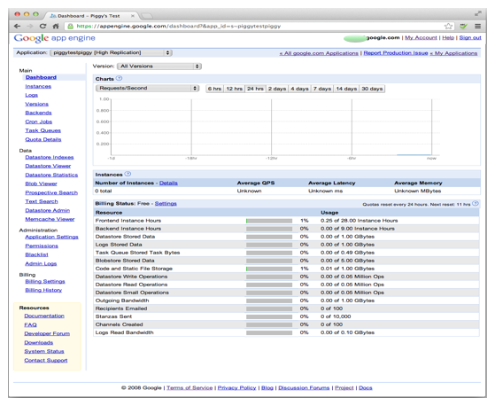
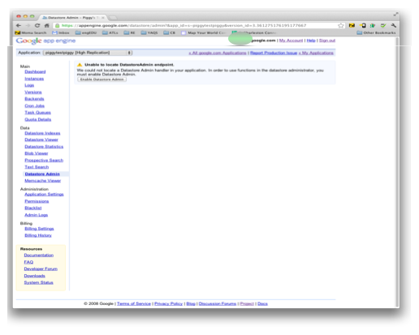

Despliegue su aplicación a Google
- Registrar su aplicación (por supuesto) con Google
- Establecer una contraseña específica de aplicación
- Subir (o implementar) su aplicación
- (Alternativa) Sube sin contraseña
- Modificar una aplicación en producción
- Activación y uso de almacén de datos de administración
- Configuración de la seguridad
Durante el desarrollo, que trabajan principalmente en el curso usando su servidor de desarrollo. (Ver Desarrollar con Google App Engine para obtener información sobre el uso de GAE durante el desarrollo.)
Cuando esté listo para la prueba final o su curso a disposición de los estudiantes, es el momento de implementar la aplicación para servidores de producción de Google. En la producción, su aplicación reside en centros de datos de Google. Google corre el servidor de producción que contiene el curso. En ese momento, la gente puede acceder a su curso a partir de su dirección URL predeterminada de APP_ID.Appspot.com, donde APP_ID es el nombre de la aplicación se registra Regístrese a continuación.
La primera vez que se implemente la aplicación, hay tres pasos:
- Registrar su aplicación con Google.
- Establezca para arriba una contraseña de app-específico.
- Subir (o implementar) su aplicación.
Si realiza cambios y la necesidad de redistribuir las partes de su aplicación, siga las instrucciones de modificar una aplicación en producción.
Esta página habla acerca de la implementación de su aplicación a la producción. Al implementar su aplicación a la producción, por lo general se haga pública. Usted puede decidir que quiere probar la aplicación en producción antes de hacerlo público. Para ello, tendrás que seguir los pasos que aparecen en esta página y siga los pasos de Crear un servidor de pruebas en producción.
Registrar su aplicación (por supuesto) con Google
Antes de poder implementar (o subir) una solicitud a Google, debe registrar esa aplicación con Google, dándole un nombre.
Al registrar un nombre en Google, Google le da a su aplicación un nombre de dominio que corresponde a ese nombre. Una vez registrado y desplegado, tu curso de se puede llegar desde casi cualquier lugar de la Internet. El nombre de dominio de Google utiliza es de la formaAPP_ID. Appspot.com, donde APP_ID es el nombre que se registre.
Nota sobre los nombres: Debe elegir un nombre que no haya sido ya utilizado por nadie más. Backstage nombres de identificación sólo puede utilizarse una vez y nunca puede ser devuelto a la lista de nombres disponibles. Ya sea que su aplicación se está ejecutando, no se ejecuta, o se elimina, una vez que un nombre ha sido elegido, ya no puede ser utilizado por cualquier otra aplicación.
Para registrar su aplicación:
- Usted debe tener una cuenta de Google para registrar una aplicación de Google App Engine. Si usted no tiene una cuenta de Google, puedes crear una cuenta de Google con una dirección de correo electrónico y contraseña.
- Una vez que usted tiene una cuenta de Google, iniciar el registro de su aplicación en una de dos maneras:
- Desde un navegador web, vaya a https://appengine.google.com/
- En el iniciador de GAE, haga
clic en Panel de control.
Ambos conseguirle el mismo lugar. - Si no has iniciado sesión en tu cuenta de Google, verá una pantalla de inicio de sesión.
- Una vez que se conecte, verá el cuadro de mandos GAE. Si usted nunca ha trabajado en una aplicación GAE, su tablero de instrumentos es el siguiente:

- Haga clic en Crear aplicación y siga las instrucciones para verificar su cuenta. Después de este proceso, se ve la pantalla nueva aplicación:

- Para crear una nueva aplicación, siga las instrucciones para registrar un ID de aplicación, un nombre único para esta aplicación. Si usted decide usar el nombre appspot.com libre de dominio, la dirección URL completa de la aplicación será APP_ID http://. Appspot.com /.También puede comprar un nombre de dominio de nivel superior para su aplicación, o utilizar uno que ya se ha registrado.
Importante: El ID de aplicación se registra para su aplicación debe ser el ID de aplicación en el archivo app.yaml, véase Ejecutar la aplicación de ejemplo. Si se registra un número de identificación diferente de las que usa en el desarrollo, debe cambiar app.yaml antes de implementar la aplicación.
Más información sobre cómo crear una aplicación se puede encontrar en la documentación oficial.
Establecer una contraseña específica de aplicación
Desarrollador del curso utiliza 2-paso de autenticación para garantizar la seguridad de sus cursos. Esto significa que para implementar su aplicación, usted no proporciona la contraseña estándar que va con su nombre de usuario. Usted en lugar suministrar una contraseña que es específico a esta aplicación. Ver Firmar en el uso de contraseñas específicas de la aplicación para obtener información sobre cómo crear su aplicación específica contraseña.
Anote la contraseña que generan. Tendrá que usarlo varias veces en el paso siguiente. También vas a necesitar en el futuro, si se realizan cambios que se deben cargar.
Sube (o deploy) tu app
Una vez que registre su aplicación, la forma más sencilla de implementar es a partir de una línea de comandos o el comando. Desde esa ventana:
cd AppPath
appcfg.py actualizar.
Donde AppPath es el directorio que contiene el código de su aplicación. Tenga en cuenta que el punto al final del comando de actualización appcfg.py es necesario.
Para cada comando appcfg.py, se le pedirá que proporcione sus credenciales. Proporcione su nombre de usuario y la contraseña específica de aplicación que ha creado en el paso anterior.
Se puede tomar hasta un minuto para desplegar su aplicación, generalmente es menos de 30 segundos, pero por lo general no más de un minuto. Una vez que el implementación se completa y confirma, usted (y todo el mundo otra cosa en el planeta no bloqueado a partir de Google) puede visitar APP_ID http://. Appspot.com y verifique que su app es en efecto disponible para todos.
(Alternativa) Sube sin contraseña
En general, cada vez que realice un cambio que te hace volver a implementar su aplicación a la producción, usted necesita recordar la contraseña específica de aplicación creados cuando se registra o necesita una nueva aplicación específica contraseña. En algunas situaciones, usted puede optar por no dar una contraseña a todos, dando acceso GAE a su cuenta.
Antes de optar por hacerlo, por favor, lea Login sin contraseña con OAuth2 , de modo que usted entienda los riesgos implicados.
Para cargar la aplicación sin proporcionar sus credenciales:
cd AppPath
appcfg.py - Actualización oauth2.
Donde AppPath es el directorio de que contiene el código de su la aplicación de. Tenga en cuenta que del período a la final del comando segundo es es necesario.
Tenga en cuenta que esto funciona para el comando de carga. No funciona el comando upload_data. Por esta razón, si usted cargar cambios en cualquiera de los dos datos / o datos lesson.csv / unit.csv, debe suministrar su aplicación específica contraseña.
Modificar una aplicación en producción
Una vez que se implemente la aplicación, modificándolo en la producción es un poco más complicado que modificarlo en el servidor de desarrollo. Una de las razones más comunes para la modificación de su curso de la producción es hacer unidades disponibles progresivamente, como el curso continúa. (Consulte Crear página principal.)
Usted sube modificaciones a los archivos CSV, archivos course.yaml, contenido de las evaluaciones o actividades (archivos activos / js /) o el aspecto de las distintas páginas de su curso (archivos en views /) de la misma manera que has subido los a la producción en el primer lugar. Es decir, desde el intérprete de comandos o el comando:
cd AppPath
appcfg.py actualizar.
donde AppPath es el directorio que contiene el código de su aplicación. Tenga en cuenta que el punto al final de la segunda orden es necesario.
Se le pedirá que proporcione sus credenciales. Proporcione su nombre de usuario y la contraseña específica de aplicación que ha creado. Si no recuerda la contraseña de aplicación específica, crear otra.
Después de la implementación completa cambios en los archivos CSV y archivos course.yaml será visible instantáneamente. Los archivos JavaScript y la imagen de los activos / js / se almacenan en caché en los navegadores de los estudiantes durante 10 minutos y no se ven, inmediatamente. Los cambios frecuentes a las evaluaciones y actividades pueden hacer que sea difícil para invalidar analizar los resultados presentados anteriormente.
Activación y uso de almacén de datos de administración
Los siguientes pasos sólo tienes que hacer una vez:
- Desde un navegador web, vaya a https://appengine.google.com/ .
- En la página Mis aplicaciones, haga clic en el nombre de la
aplicación. El tablero de
instrumentos para su aplicación aparece:
 - En la barra de navegación izquierda, haga clic en Administrador de almacén de datos. La primera vez que haga esto, aparecerá una pantalla que le pregunta si desea activar las opciones de almacén de datos de administración:

- Haga clic en Habilitar administrador de almacén de datos.
- La página de administración de almacén de datos para su aplicación aparece.
Usted Ahora puede utilizar de la parte administrativa Datastore para inspeccionar directamente o exportar datos almacenados por un Constructor Curso. Le aconsejamos que no modifique los objetos del almacén de datos directamente.
Configuración de la seguridad
Después de implementar nuestra aplicación, pero antes de que alguien utiliza el curso, debe cambiar la configuración de seguridad predeterminada. Desarrollador del curso implementa protección contra transitorios de acción XSRF utilizando el usuario fichas específicas para todas las operaciones que modifican el estado HTTP soportado por el producto.
Para cambiar el símbolo por defecto, vaya a Configuración en la página del administrador y cambie el valor de gcb_xsrf_secret. Ver Seguridad para más información.